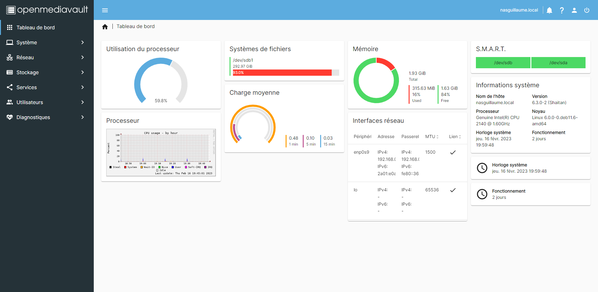

J'avais besoins de stocker des données accesibles sur tout mes appareils depuis mon réseau, je suis donc partie sur la solution d'herberger un serveur Open Media Vault sur mon réseau local avec un vieux pc de recup très peu puissant et ca fonctionne super bien, j'ai aussi été obligé de prendre cette solution car un NAS coute pour moi assez cher et vu que j'aime bidouiller et que j'aime aussi les vieilles machines bah je me suis dit que c'était la meilleur solution pour moi
Encore une fois on a belle interface Web pour gérer le NAS et la voici :
Encore une fois de plus une interface simple d'utilisation, joli, bref juste ce qu'il faut pour l'utilisation
Si vous voulez vous renseigner plus a propos d'Open Media Vault voici juste la le lien : https://www.openmediavault.org/